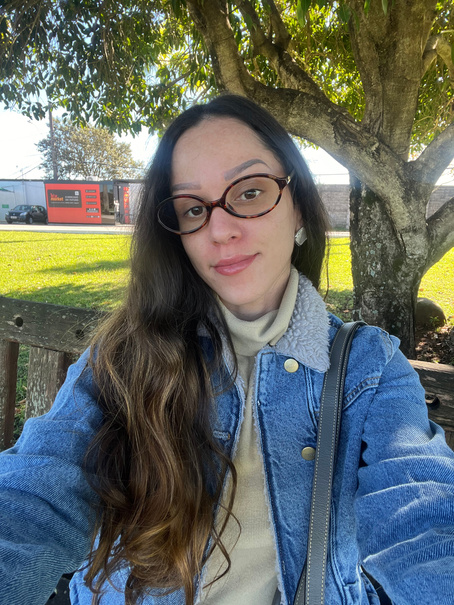

Atendimento pedagógico online, aulas de reforço e serviços de acolhimento para crianças, adolescentes e famílias — com práticas inclusivas, metodologias ativas e escuta centrada no desenvolvimento integral de cada estudante.
Formada pela Unicamp · Itatiba–SP e atendimento online

TEA & dislexiaComunicação Não ViolentaMetodologias ativas
Role para conhecer
140+jovens e crianças acompanhados
8+anos dedicados à educação
2pós-graduações em andamento
Prazer, sou a Ana
Educar é acolher e caminhar junto com cada estudante.
Sou pedagoga formada pela Universidade Estadual de Campinas (Unicamp), com atuação na Educação Infantil, no Ensino Fundamental I e na formação de adolescentes e jovens aprendizes. Ao longo desses anos, construí práticas pedagógicas inclusivas, acompanhei a aprendizagem de perto e cuidei do relacionamento com as famílias.
Também levo a educação para fora da sala de aula. Sou roteirista, produtora, editora e apresentadora de conteúdo educativo — do rádio ao vivo ao podcast — e fui responsável pela comunicação digital dos cursinhos populares onde atuei. A escuta é a mesma da sala de aula, apenas em outro formato.
Acredito que a foto e o vídeo eternizam momentos e histórias. Não por acaso a história oral vem ganhando força e espaço na sociedade e na comunidade acadêmica: dar registro a quem conta é, também, um jeito de ensinar.
Atualmente curso pós-graduação em Psicopedagogia e em Gestão de Pessoas e Psicologia Organizacional. Defendo uma educação acolhedora, inovadora e centrada no desenvolvimento integral — onde cada criança aprende no seu tempo, com confiança e protagonismo.
Práticas inclusivasEscuta e acolhimentoMetodologias ativasParceria com as famíliasProdução de conteúdo educativo
— Ana Claudia Morais Alves
Como posso ajudar
Serviços pensados para cada momento da aprendizagem
Atendimento individual e humano, presencial em Itatiba–SP ou online para todo o Brasil.
Atendimento Online
Acompanhamento pedagógico e psicopedagógico a distância, em encontros individuais por vídeo. Planos de aprendizagem personalizados e orientação para famílias — onde você estiver.
Reforço escolar para a Educação Infantil e o Ensino Fundamental I. Apoio nas tarefas, metodologias ativas e estratégias que despertam a autonomia e o prazer de aprender.
Escuta atenta e acolhedora para crianças e estudantes, incluindo acompanhamento de TEA e dislexia. Um espaço seguro, guiado pela Comunicação Não Violenta, para aprender com confiança.
“Práticas pedagógicas acolhedoras, inovadoras e centradas no desenvolvimento integral de cada estudante.”
Olhar individual e inclusivo
Cada estudante tem seu ritmo. Adapto estratégias para necessidades específicas, como TEA e dislexia.
Escuta e Comunicação Não Violenta
Um ambiente seguro, de confiança e diálogo, onde aprender também é se sentir acolhido.
Metodologias ativas
Aprendizagem colaborativa e protagonismo estudantil, para transformar tarefa em descoberta.
Parceria com as famílias
Relatórios e acompanhamento próximos, para que família e escola caminhem na mesma direção.
Voz e produção
Educação que também se escuta.
Antes de virar podcast, foi rádio ao vivo. Há anos produzo conteúdo educativo de ponta a ponta — roteiro, gravação, edição e apresentação — para levar conhecimento a quem dificilmente chegaria até ele de outro jeito.
RádioCast Betinho
Programa Conexões · Unicamp + Cursinho Popular Herbert de Souza
Projeto de rádio nascido da parceria entre a Unicamp e o Cursinho Popular Herbert de Souza, na Vila União, região sudoeste de Campinas — o nome é uma homenagem ao sociólogo Betinho, Herbert de Souza.
O programa Conexões ia ao ar ao vivo, duas vezes por semana, sob minha coordenação e apresentação, ao lado dos estudantes bolsistas. Depois virou podcast: agroecologia, iniciação científica, políticas ambientais, masculinidades negras e as vivências de quem faz o cursinho acontecer.
Fomos ao ar pela Rádio Tainã, da Casa de Cultura Tainã. O cursinho e a Tainã integram a Rede Mocambos, coletivo que constrói sabedoria digital em territórios periféricos, quilombolas e indígenas.
Como bolsista do projeto Histórias negras: registros orais para a desinvisibilização da presença negra em Campinas (1930–1970), do Serviço de Difusão Cultural do Centro de Memória da Unicamp.
Produzi sete episódios em duas séries — os registros orais com moradores e a série Voz negra e popular, sobre Laudelina de Campos Melo, lançada na 9ª Semana Nacional de Arquivos. Da apuração nos acervos e da escuta dos entrevistados ao episódio publicado.
Entre 2020 e 2023, respondi pelas páginas do Cursinho Popular Herbert de Souza no Instagram e no Facebook: linha editorial, divulgação dos processos seletivos e mobilização da comunidade em torno do cursinho — que hoje reúne mais de 4 mil seguidores.
Da Educação Infantil à formação de jovens aprendizes, em escolas, projetos sociais e na universidade — e, hoje, no Mapa Falado, projeto autoral sobre geografia, cultura e língua da América do Sul.
2026 · Atual
Mapa Falado — geografia, cultura e língua da América do Sul
Projeto autoral · Produção independente
Roteiro em produção e gravações em andamento: começaram em Santiago e em El Colorado, no Chile, e seguem para a Argentina e o Uruguai ainda este ano. Com o material, estão sendo produzidos vídeos, textos e podcasts sobre as experiências — a geografia, a cultura e a língua de cada país, os dialetos e suas origens. Com agenda aberta para novos atendimentos e aulas.
2026
Instrutora de Aprendizagem
CIEE — Centro de Integração Empresa-Escola
Formação teórica de aproximadamente 140 jovens aprendizes, com aulas de competências socioemocionais, ética profissional e projetos pedagógicos, além de relatórios e acompanhamento junto às famílias e empresas. Contrato encerrado em agosto de 2026.
2025
Estagiária em Pesquisa e Produção de Conteúdo Educativo
Centro de Memória da Unicamp
Pesquisa histórica e documental, produção de materiais educativos e do podcast Histórias Negras, em projetos de extensão universitária.
2024 · 2025
Instrutora Pedagógica
Colégio Renovatus — Rede Decisão
Turmas do 3º ao 5º ano no contraturno, aprendizagem colaborativa, metodologias ativas e acompanhamento de estudantes com TEA e dislexia.
2022 · 2023
Estágio em Educação Infantil
Colégio Rio Branco
Turmas regulares e de contraturno (Infantil II ao IV), acompanhamento da rotina, do desenvolvimento da autonomia e apoio a projetos pedagógicos.
2016 · 2023
Coordenadora de Extensão
Cursinho Popular Herbert de Souza
Coordenação de professores e bolsistas da Unicamp, gestão de projetos de extensão e parcerias comunitárias, e implantação de cursinho popular no Assentamento Marielle Vive. Também coordenei e apresentei o programa Conexões, do RádioCast Betinho, e cuidei das redes do cursinho entre 2020 e 2023.
Vamos conversar?
Conte-me sobre o seu pequeno estudante.
Me chame no WhatsApp para uma conversa sem compromisso. Juntos, encontramos o melhor caminho de aprendizagem — com acolhimento e cuidado.